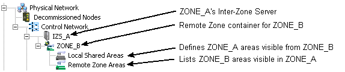

Implementing DeltaV Zones
The following figure shows a portion of the DeltaV Explorer hierarchy of a DeltaV system whose zone name is ZONE_A. IZS_A is the Inter-Zone Server in ZONE_A.

The following list contains general procedures to implement DeltaV Zones to connect existing DeltaV systems.
The following assumes the DeltaV systems are offline, not running a process.
- Install, configure, and set binding order for network interface connections (NIC) in the Inter-Zone Servers.
- Connect Inter-Zone Servers to DeltaV Networks and each other through switches.
- Upgrade DeltaV software on all workstations within each DeltaV system
- Install DeltaV software on Inter-Zone Servers.
- On the Select Your Workstation Type dialog, select Inter-Zone Server.
From the ProfessionalPLUS workstation in each DeltaV system:
- Select the Enable Zones check box in the System Preferences dialog.
- Name the zone from the Properties dialog of top-level node (DeltaV_System) in DeltaV Explorer. This name is how other DeltaV systems specify this system.
- Create an Inter-Zone Server under the Control Network. This Inter-Zone Server represents the IZS hardware installed in the DeltaV system.
- If you are installing redundant Inter-Zone Servers, select the Inter-Zone Server is redundant check box on the server's Properties dialog.
- Create a Remote Zone container under the IZS for every other DeltaV system this system is connected to.
You create the Remote Zone containers manually by selecting the Inter-Zone Server and then selecting New Zone from the context menu.
Note: The Remote Zone container names must be the zone names given to the other systems in their configurations.Each Remote Zone container has two subfolders: Local Shared Areas and Remote Zone Areas. You manually populate the Local Shared Areas folder. The Remote Zone Areas folder is populated either by exporting and importing zone topologies or by auto-sensing remote zones.
- In Local Shared Areas under each Remote Zone container, specify the areas in this DeltaV system whose parameter data you want to be visible in the system represented by the Remote Zone container. You also specify whether the other system has read or read and write access to each area.
- Select to create a cfg file.
You will use this configuration file to set up the Inter-Zone Server in this DeltaV system.
From the Inter-Zone Server in each DeltaV system:
- Run Workstation Configuration.
- Select Inter-Zone Server in the Select Workstation Type area of the dialog.
- Browse to and select the .cfg file you created earlier.
- Determine if you are installing redundant Inter-Zone Servers.
- Set the Primary and Secondary DeltaV and Primary and Secondary IZCN network NICs.
If you want users to be able to write to areas you shared as read and write from other zones, populate Remote Zone Areas.
There are two ways to populate Remote Zone Areas. After you create all Remote Zone containers and populate all Local Shared Areas in the Remote Zone containers from every ProfessionalPLUS workstation:
- Auto-sensing Zone topologies
- Importing Zone topologies
Assign the Remote Zone Areas to the Alarms and Events subsystem of a local Operator Station (not an Application Station) to have alarms appear in the alarm banner and displays (if the areas are shared as read and write) and alarms and events to be recorded in the Event Chronicle.
The Remote Zone Areas are also available in the DeltaV User Manager when you assign members to groups or keys to users.
From the ProfessionalPLUS workstation in each DeltaV system:
- After Workstation Configuration completes on the IZS, download the Inter-Zone Server from the ProfessionalPLUS workstation.
- Create new modules or modify existing modules to read data from other DeltaV systems as required for your situation.
- Create new operator pictures or modify existing pictures to incorporate data from other DeltaV systems as required for your situation.
You can use the DeltaV Upgrade Picture Expert to use existing pictures to create pictures that access data from other DeltaV systems.
The following sections expand on installation procedures that are unique for DeltaV Zones.